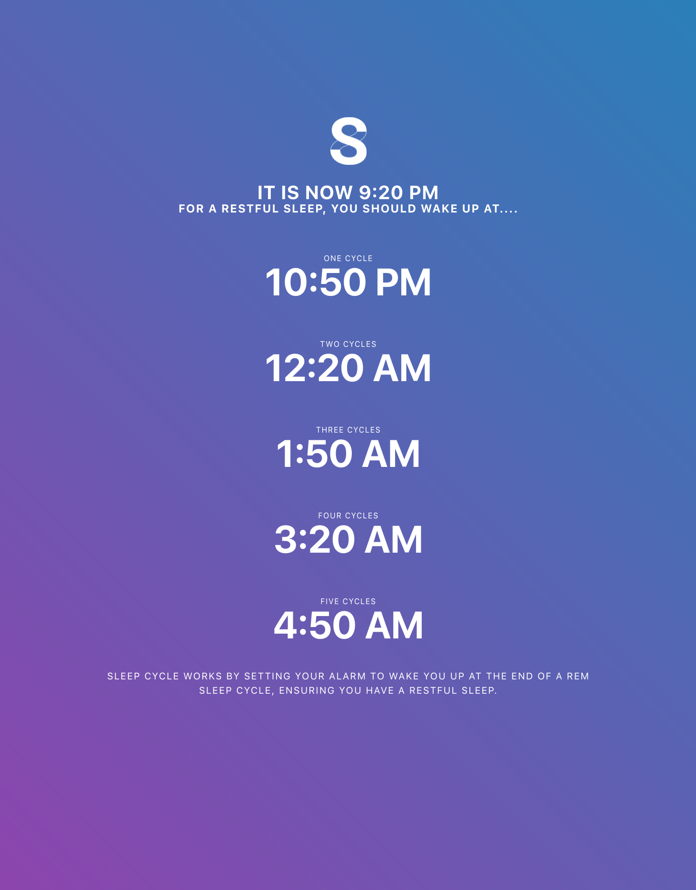
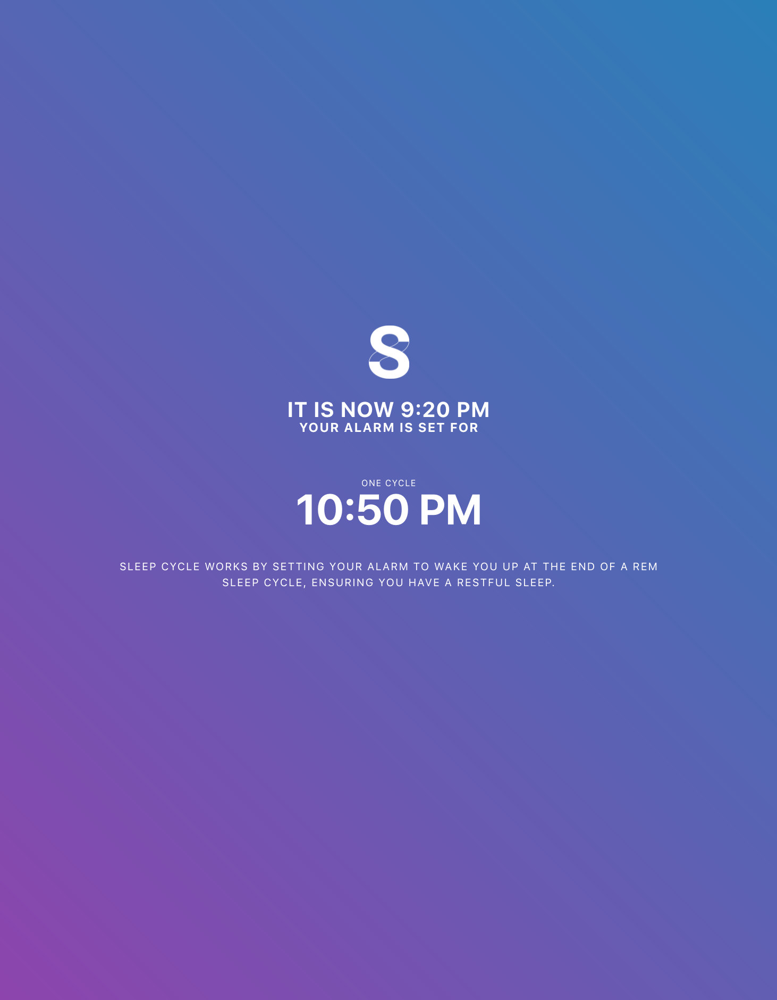
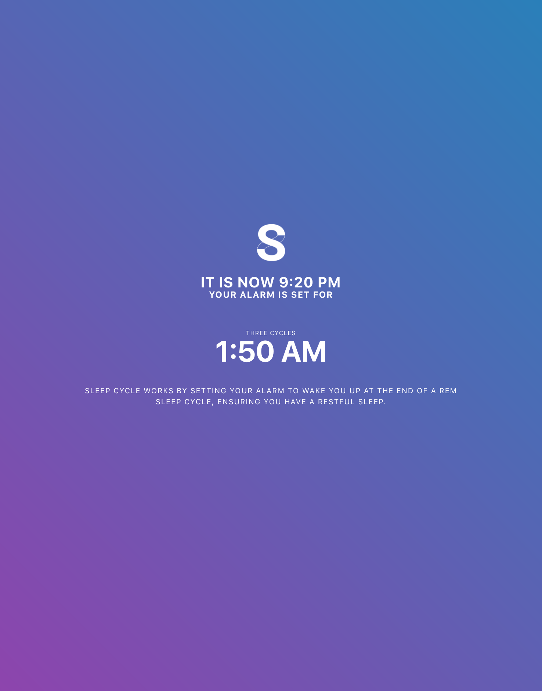

I’ve often noticed some nights I can stay up rather late and still wake up refreshed, while other nights when I go to bed early and feel sluggish. This led me to researching into REM cycles and how they can impact how you feel when you wake up. This lead to an idea, make a site that can help you wake up refreshed.
The core challenge of this project was dealing with similar concepts that already exist. A funny thing that happened during development is that while working on a earlier version of this site, I found a site that used my original concept of entering when you wished to wake up and then list several times you should go to sleep. This need to pivot actually led me to a simpler, and I would argue, more efficient site in the end.
Sleep cycle initially started out as a pure design exercise with no plans of a coded execution. My original goal was to practice designing for mobile interfaces and bringing in my interest in time and sleep felt like a good fit.
Originally, the concept of sleepy cycle was much more complex. First, you would enter in the time you wished to wake up. From that, you were given different times to go to bed. You would then select one of those times, and then adjust when you wanted to be notified to go to sleep.
While this was a good initial exercise in mobile design, looking back now it feels very tedious for a user and might feel frustrating if executed thusly.
As I progressed in my coding skills, I felt more comfortable with possibly executing this idea. Having prior experience using moment.js I already knew how I could execute this idea and felt ready to get going. However, as I was doing some research into REM cycles and alarms, I found that a site with my original concept already existed.
I knew I didn’t want to create just a better looking version of an already existing idea, but at the same time I felt passionate about this idea and wanted to still pursue a version of this. Funny enough, this problem probably was the best thing to happen to this project as it caused me to simplify and pivot my idea into something I feel can be more useful to someone in the end.
Knowing I wanted to stay original, I decided to change how the site worked. Instead of entering when you wished to wake up and choosing from a list when to go to bed, I thought that basing the alarm on when you’re going to sleep can be a unique way to approach this problem.
When I’m going to bed, setting my alarm for the next day usually doesn’t happen until I get in bed. From this I felt that basing the displayed cycle times on what time it is now could be a unique take on an alaFor sleep cycle, a user going to bed would pull open the app on their phone and from that select a wake up time from several options. From this, they would be ensured a restful sleep.
This was an incredibly fun project to work on and really pulled in not only several of my interests, but pushed me to think on my feet and pivot to new ideas. This project changed several times not only in visual design, but core concept as well. I had a great time going from pure concept to desktop prototype, and would love to one day be able to fully develop this as a mobile application.